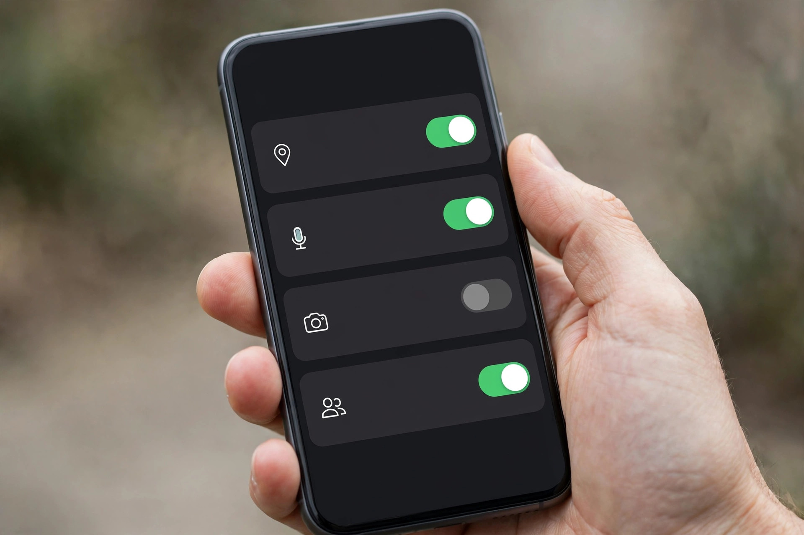

Before you install any app: the 10-second check

Rewards apps can be a reasonable way to turn spare minutes into gift cards and small payouts — or a fast way to hand your phone’s data to a developer you know nothing about. The difference is usually visible before you ever tap “install.” This is the exact three-part check we run on every app before it gets near our picks list. It takes about ten seconds per app, and it filters out most of the bad ones.
Check 1: Permissions — does this app need what it is asking for?
Before installing, open the app’s permissions list on its store page. Then ask one question: does the request match the job? A casual puzzle game asking for your contacts, call history and precise location has some explaining to do. A shopping app requesting the camera for barcode scanning does not. Legitimate rewards apps typically need very little: an account sign-in, notifications (optional), and sometimes storage for downloaded content. The red flags are requests that harvest rather than function — contacts, SMS access, accessibility services, or permission to draw over other apps, from anything that is not a tool designed for exactly that. If the permissions read like a data-collection wish list, walk away. There is always another app.
Check 2: Listing signals — what does the store page quietly tell you?
Store listings leak the truth if you read the right lines. Look at the last update date: an app untouched for over a year may still run, but its offers and payout partners are probably stale. Read a sample of recent one- and two-star reviews rather than the rating average — patterns matter more than scores. If the recent complaints cluster around one theme, especially “points stopped tracking” or “account closed at cash-out,” believe the pattern. Check the developer name and see whether it connects to a real company with a website and a support address. And be wary of lookalike listings: a new app copying the name and icon of a known one is an old trick, and the install count usually gives it away.
Check 3: Payout clarity — can you find the exit before you enter?
A trustworthy app states three numbers where you can find them: what its points are worth, the minimum balance needed to redeem, and how redemption is paid. Find all three before you invest a single task. They usually live in a help section, an FAQ or the terms — the point is that they exist and they are specific. Vague language is the warning sign: pages full of “earn big” energy with no conversion rate anywhere are telling you the real rate is embarrassing. Also check what actually counts for a reward. Many app offers credit only when you install and open the app, sometimes completing a first action, within a set time window. That rule shapes whether the offer is worth your time at all — and it is exactly the rule people miss.
The routine, in one breath
- Permissions match the app’s actual job — nothing that merely harvests.
- Recent reviews show no pattern of tracking failures or cash-out closures.
- Point value, redemption threshold and payout method are stated and findable.
- The reward conditions (install + open, time window) are clear before you start.
Ten seconds. Four glances. Run this on every app — including ours. Especially ours: the whole point of Smart Picks Daily is that our picks should survive exactly this scrutiny, because we ran it first and published what we found, including the apps that failed and got dropped.
One more habit worth adopting alongside the check: use a separate email address for app and panel accounts. It keeps offer mail out of your main inbox and limits the blast radius if a service you tried ever leaks data. Our tidy-inbox guide walks through the five-minute setup.
Today’s app pick passed all three checks — permissions reviewed, listing signals clean, payout terms stated up front.
See today’s checked app pickSponsored link. For adults 18+. Availability and rewards vary by provider, country and device — nothing is guaranteed, always read the terms.
Quick questions
Which permission is the biggest red flag?
Contacts and SMS access from apps that have no messaging or social function. There is rarely a legitimate reason, and the risk is all yours.
Is a low star rating always a deal-breaker?
No — read the recent negative reviews for patterns instead. A 3.8 average with complaints about slow payouts is different from the same average with complaints about accounts closing at cash-out.
What if an app hides its cash-out threshold?
Treat that as the answer. Programs that are proud of their terms publish them; programs that hide them are hoping you will not do the math.